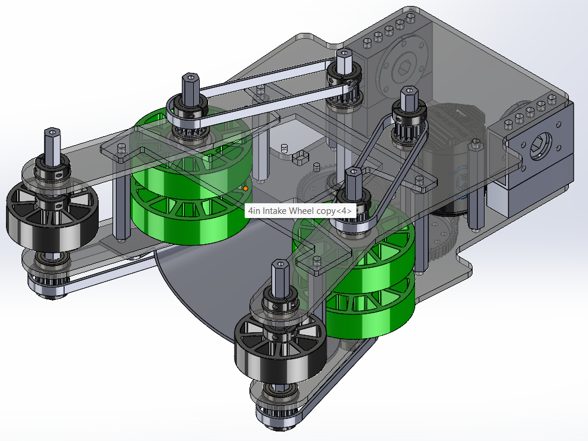
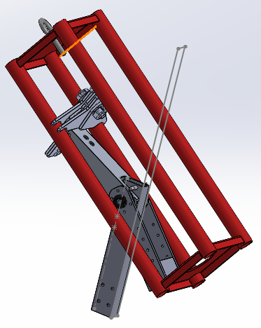

The drivetrain is the heart of the robot's mobility, allowing it to navigate and perform tasks on the field. It consists of a series of motors and wheels that provide motion. Our robot utilizes a swerve drive system, offering exceptional agility and precision by allowing independent control of each wheel's speed and direction. This enables fast and dynamic movement in all directions.
The claw is a key mechanism that grabs and holds game pieces for transport. It operates using motor-driven wheels that can either intake or expel pieces, depending on the direction of the motor’s rotation. The wrist mechanism, powered by another motor, allows the claw to tilt to specific angles, optimizing the intake and scoring positions based on the task at hand. This combination of claw and wrist provides versatility in manipulating objects of varying sizes.
Photon Vision is an advanced vision subsystem that enables the robot to track and interact with targets on the field. It leverages cameras and image processing software to determine critical information such as target distance, angle, and position. The system primarily tracks AprilTags, markers placed on the field that help the robot align itself accurately with targets for precise positioning and scoring. This system significantly enhances the robot’s autonomous capabilities.
The elevator subsystem enables the robot to reach different heights, which is essential for both intaking and scoring game pieces. It uses two motors for vertical movement, with multiple setpoints corresponding to different heights on the playing field. The elevator system is designed to provide smooth, controlled movement, allowing the robot to operate efficiently across various levels of the game.
The climber is a critical endgame mechanism that allows the robot to elevate itself off the ground by engaging the cage. This year, the robot is equipped with a specialized mechanism designed for a deep climb, allowing it to ascend to higher levels more effectively. Successful climbing requires precise control and timing, helping the robot secure valuable points during the final moments of the game.
